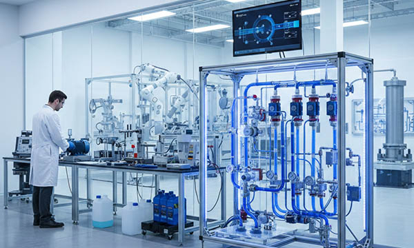

The hydraulic and fluid power industry is the muscle of modern engineering, providing the force necessary for construction machinery, industrial presses, agricultural equipment, and aerospace systems. Germany, a global powerhouse in hydraulic innovation, as well as France, Italy, Switzerland, the United Kingdom, Norway, Austria, Poland, and the Benelux countries, rely on fluid technology for high-performance operations.
Components such as hydraulic pumps, valves, manifolds, and hydro-cylinders are subjected to extreme conditions, including high pressure, constant vibration, thermal fluctuations, and continuous exposure to hydraulic oils, lubricants, and aggressive cleaning chemicals. In this “Best Fluid” environment, standard labeling is insufficient.
Professional engraved hydraulic plates, oil-resistant labels, pump identification tags, valve markers, flow direction arrows, technical rating plates, and high-pressure safety signs are critical for maintenance, safety, and operational clarity.
At SignXpert, we specialize in high-durability labeling solutions for the hydraulic industry in Germany and throughout Europe. Our products are engineered to remain legible and securely attached, even in the most demanding industrial fluid environments.
Fluid Power Excellence: Supporting the Machinery Core in Germany and Europe
Germany leads the European market in hydraulic and pneumatic engineering, setting the standards for component reliability. Italy and France follow closely with strong sectors in mobile hydraulics and agricultural machinery, while Switzerland focuses on high-precision fluid control systems.
The United Kingdom and Norway are hubs for offshore and maritime hydraulic applications, Poland is a growing center for industrial cylinder production, and the Benelux region serves as a strategic logistics and assembly point for fluid systems.
Across these regions, hydraulic components must comply with strict safety and technical directives. Engraved type plates, industrial rating plates, and CE marking plates are mandatory for documenting pressure ratings, flow rates, and serial numbers.
Clear identification ensures that technicians can perform maintenance accurately, reducing the risk of system failure and environmental contamination.
SignXpert is a dedicated partner for hydraulic manufacturers in Germany, with fast and reliable distribution to France, Italy, Switzerland, the UK, Norway, Austria, Poland, and the Benelux countries.
Reliability in Harsh Environments: Oil and Chemical Resistance
The primary challenge for hydraulic labeling is the constant presence of hydraulic fluids and lubricants. Standard adhesive labels often degrade or peel off when exposed to oils.
At SignXpert, we use specialized two-layer polymers and anodized materials that are chemically inert.
Our solutions for the fluid power industry include:
- Engraved Pump & Motor Plates: Permanent identification of technical specifications that won’t wash away during oil leaks or high-pressure cleaning.
- Cylinder Identification Tags: Thin, flexible 0.8 mm plates that can be mounted on curved surfaces using high-performance 3M™ adhesives.
- Flow & Direction Markers: High-contrast engraved arrows and labels to ensure correct hose and valve connection, preventing dangerous assembly errors.
By using deep laser engraving, the information is physically etched into the material, making it impossible to “wipe off” technical data, even in the dirtiest industrial settings.
Maintenance and Safety: The Role of Clear Signage
Hydraulic systems operate under immense pressure, posing significant safety risks. Hazard zones and high-pressure lines must be clearly identified with industrial safety signs and warning decals.
Emergency stop labels and maintenance instruction plates help operators react quickly during a malfunction.
Furthermore, hydraulic cylinders and pumps are often considered “consumable” or “serviceable” parts in heavy industry.
Asset tags and QR code plates allow maintenance teams in Germany, Poland, or France to scan a component and instantly access its service history, spare part numbers, or pressure test certificates.
This digital integration improves uptime and extends the lifespan of the entire hydraulic system.
Engineering for Durability: Heat, Vibration, and Pressure
Hydraulic components frequently experience significant temperature changes and mechanical stress. Our engraved labels and industrial plates are designed to withstand vibration and thermal expansion without cracking or losing adhesion.
Using 3M™ High Performance adhesive technology, SignXpert ensures that labels stay bonded to cast iron, steel, and powder-coated surfaces common in hydraulic manufacturing.
Whether it’s an offshore rig in Norway, a construction site in the UK, or an automated factory in Germany, our labeling solutions remain legible and intact, ensuring long-term compliance and safety.
Why SignXpert is the Leading Choice for Hydraulic Labeling in Germany and Europe
SignXpert is a trusted supplier of engraved hydraulic plates, oil-resistant machine labels, pump rating plates, CE marking tags, and safety decals for the fluid power sector.
We focus on the German market while providing rapid delivery to France, Italy, Switzerland, the United Kingdom, Norway, Austria, Poland, and the Benelux region.
Our online configuration tool allows hydraulic engineers and production managers to easily design custom type plates, import technical data lists for batch production, and select materials specifically tested for oil and chemical resistance.
Choosing SignXpert ensures that your hydraulic systems — the heart of your industrial performance — are marked with the highest standard of durability, clarity, and European compliance.